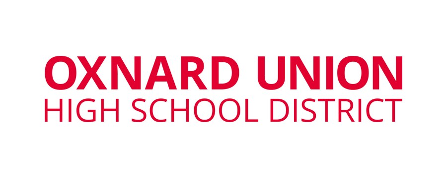
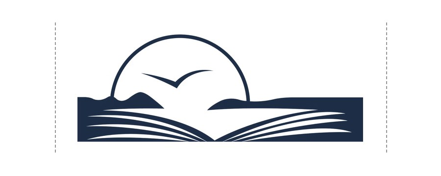
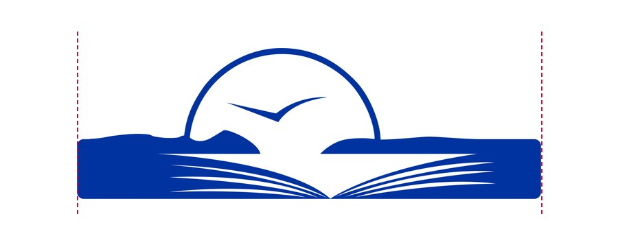

District Brand
Style Guide
How to use our logo, colors, and type consistently across print, web, presentations, and AI-generated materials.
Everyone creating district materials should reference this page before designing anything new.
Logo Library
Ten approved variations. Pick the one that matches your background color and layout. Never recreate, redraw, or approximate the logo by any other means.
- Full color on white and light backgrounds.
- White on navy, black, and photos.
- One-color Oxnard Blue for vinyl, vehicles, and single-ink printing.
- Horizontal for wide spaces, stacked for tall or square ones.
- SVG for print, PNG for screens.
One color · Oxnard Blue · for vinyl, vehicle decals, and single-ink printing on white or light surfaces
Each card includes a vector SVG and a high-resolution transparent PNG (2000px wide). Give SVG files to printers, sign shops, and anyone scaling the logo. Use PNG for slides, documents, email, and social media.
Clear Space
Always keep the area immediately around the logo free of text, images, and edges, so it can breathe and stays legible.
- Measure x: the height of the letters in OXNARD UNION.
- Leave x of empty space on every side of the logo.
- Resize the logo and the clear space scales with it.
- Text, photos, and page edges stop at the dashed line.
Minimum clear space on every side equals x, the cap height of the letters in "OXNARD UNION" (the top line of the wordmark), shown as the dashed box above and measured from the brand file. Nothing else may enter that zone: text, photos, other logos, or the edge of the page. When the logo is resized, the clear space scales with it proportionally.
Protect the Mark
The logo's proportions, colors, and construction are fixed. If you find yourself dragging a corner handle, changing a fill color, or adding an effect, stop and grab a different file from the library instead.
- Don’t stretch it.
- Don’t rotate it.
- Don’t recolor it.
- Don’t add effects.
- Don’t use busy backgrounds.
- Don’t retype it. Place the official file.
Logo in Use
How the logo should look on district vehicles and apparel. Use these as the reference when you order decals or shirts, and send vendors the files from the Logo Library, not these pictures.
Fleet vehicles · white body · one-color Oxnard Blue logo on both front doors
Center the stacked one-color Oxnard Blue logo on the flat area of each front cab door, below the window. Put it on both the driver and passenger doors. As a starting point, make it about 18 to 20 inches wide on a standard cab door, then confirm against the actual door with your vinyl vendor.
The passenger side uses the same file, reading left to right. Don't flip the logo so it "faces forward." Keep clear space from handles, seams, mirrors, and the wheel arch.
Apparel · shirt color decides the logo version
White and Blue Tint 60% (#99ADD9) shirts take the full-color logo. Navy (#001F61) shirts take the reversed white logo: the full-color logo's blue measures about 1.45:1 against navy, so the sun and book disappear. On Blue Tint 60%, the red lettering has lower contrast (about 2.2:1), so ask the printer for a sample first.
Retired Logos
These earlier versions of the district mark have been phased out. If you find one on a document, sign, vehicle, or webpage, please replace it with a current logo file from the library above.
Do not use these. They may still turn up in old templates, printed materials, or site pages that haven't been updated yet. That doesn't make them current. Always pull logo files from this page. Not sure which one you have? See What Changed for the three details that tell them apart.
What Changed
At a glance the current logo and the retired versions look alike, which is why old files keep turning up. Check these three details. If a logo misses any one of them, it's a retired file. Replace it with a file from the Logo Library.
- Lettering: serif is retired, sans serif is current.
- Sunset: the current band is wider, with rounded ends.
- Weight: OXNARD UNION bold, HIGH SCHOOL DISTRICT regular.
- Three yeses means it’s current.
Sans serif lettering
The district name is now set in a clean sans serif typeface, in all capitals. The retired badge used a serif typeface, with small "feet" at the ends of each letter, in upper and lowercase.

A wider sunset
The band under the sun now extends wider on both sides and finishes with rounded ends. In the retired versions it's cut off square close to the sun. Both icons are shown at the same height; the dashed lines mark the current width.


Bold, then regular
OXNARD UNION is set in bold, and HIGH SCHOOL DISTRICT is set in the regular weight of the same typeface. In the retired versions both lines share one weight, so nothing leads the eye.
Plain letters with no "feet"? Sunset band reaching wide with rounded ends? OXNARD UNION bold over a lighter HIGH SCHOOL DISTRICT? Three yeses means it's current. Any no means swap it for a file from the Logo Library.
Color Palette
Two official colors, Oxnard Red and Oxnard Blue. Use the base colors for primary brand moments; use tints and shades for supporting UI, charts, backgrounds, and hierarchy.
- Two official colors: Oxnard Red and Oxnard Blue.
- White text needs a dark enough background (4.5:1 for body text).
- Never put Red directly on Blue.
- Light tints are fills behind dark text.
- HEX or RGB on screens, CMYK for print.
Oxnard Red · shades & tints
Oxnard Blue · shades & tints
Base colors are the official brand colors, for logos, headers, and primary brand moments. Shades and tints are for supporting work such as web UI, charts, table fills, backgrounds, and hierarchy.
Official spot-color matches aren't defined in the current brand file. For print jobs that require Pantone, ask your printer to match against the CMYK values above rather than guessing a PMS number, since an unverified match can shift color noticeably. This section will be updated once official PMS codes are confirmed.
Contrast
What matters on screen is contrast: whether text is actually legible against its background. WCAG requires at least 4.5:1 for normal body text, and at least 3:1 for large text (18px and up, or 14px bold) and UI elements like icons, buttons, and input borders. Ratios below are calculated from the palette's HEX values.
| Color | As text on white | As text on black | White text on it | Black text on it | Recommended use |
|---|
Red text on Blue, or Blue on Red. Oxnard Red directly on Oxnard Blue measures about 2.15:1, well under the 3:1 minimum for even large text. Always separate them with white, black, or plenty of neutral space instead of layering one directly on the other.
"Web-safe" used to mean the 216-color palette built for 1990s monitors that could only show 256 colors. Every modern screen has moved past that, so it isn't a real constraint anymore. Contrast is what still matters.
- Buttons and CTAs: use the Base or Shade 20%/40% colors as button backgrounds with white text. Both base colors pass AA there, and the Red shades and every Blue base or shade pass AAA.
- Light tints are for fills: Blue Tint 60%/80% and the lighter red tints work as subtle background fills, chips, or hover states with dark text on top, not behind white text.
- Links: Oxnard Blue on white passes AAA and reads clearly as a link. Underline links regardless of color, so color isn't the only signal something is clickable.
Typography
Type is the part of the brand people see most. When every flyer, letter, slide, and sign uses the same two typefaces, families recognize a district message before they read it, and our 13 schools look like one district. Montserrat gives headlines a confident, modern voice. Open Sans was built for easy reading on screens and in print, so long letters and forms stay clear for every reader. Both are free and already built into Google Docs, Slides, and Canva, so anyone on staff can use them at no cost. Don't substitute Arial, Calibri, or Helvetica when these are available.
- Headlines in Montserrat SemiBold or Bold.
- Body text in Open Sans.
- Don’t swap in Arial, Calibri, or Helvetica.
- Both are free in Google Docs, Slides, and Canva.
Type your own text below to try them, drag the slider to resize, and pick a color.
Montserrat Bold character set · hover to inspect
Headlines, titles, section headers, callouts. Use the SemiBold or Bold weight; avoid the thin and light weights for headings.
Paragraphs, captions, UI text, forms, tables. Reserve italics for the tagline and light emphasis only.
Our Tagline
The current tagline reinforces the district's mission when the full lockup appears in formal contexts. But unlike the logo, the tagline is not permanent. Treat it accordingly.
The tagline changes over time; the logo doesn't. The tagline reflects the district's current goals and priorities, and it's revisited periodically. Historically it hasn't stayed the same for long. Anything printed, built, or published with today's wording risks looking dated once it's updated. Before adding the tagline to anything, ask: "Will this still be in use after the wording changes?" If the answer is yes, or you're not sure, leave the tagline off and use the logo on its own. That version never goes out of date.
When to use it, and when to leave it off
- Awards, honors, and recognitions, framed or archived once, as-is
- Signage or programs for a single dated event (a specific graduation, gala, fundraiser)
- Anything that already carries the current year (annual report cover, dated press release)
- The district's annual welcome letter or message templates, reviewed and refreshed yearly
- Time-boxed campaigns or initiatives with a defined end date
- Building signage, monuments, engraved plaques, vehicle decals
- Uniforms, spirit wear, or any physical goods meant to last for years
- Website headers and footers, favicons, or other evergreen digital touchpoints
- Standard letterhead, business cards, or templates reused indefinitely across staff turnover
- Handbooks, policy documents, or anything else with a multi-year shelf life
If a piece can't confidently be replaced or reviewed the next time the tagline is updated, default to the logo without the tagline. Before publishing anything that does include it, confirm with the communications team that the wording shown above is still current. The goal is to never have a policy, sign, or template still showing an outdated tagline.
Use the exact wording, capitalization, and punctuation shown above, every time it appears.
Use it only as part of the official lockup asset (the SVG or PNG from the Logo Library). Never retype it in a different font or color combination.
AI Image Tools
Image generators can't reproduce this logo exactly. Every attempt invents a new, slightly wrong variation: different proportions, a redrawn bird, shifted colors. Never ask an AI tool to draw, generate, recreate, or include the district logo. Instead, treat the logo as a fixed asset you place on top of AI-generated artwork.
- Generate artwork onlyPrompt the AI tool for background imagery, illustration, or photography only. No logos, no text, no seals or emblems.
- Leave clear spaceAsk for negative space in a corner or edge (for example "empty space in the top-left") sized for the logo plus its clear space.
- Place the real logoDrop in the official PNG or SVG from this page in Canva, Photoshop, Illustrator, or Google Slides. Never let the AI tool render it.
- Add real textSet headlines in Montserrat and body copy in Open Sans by hand. AI-rendered text is frequently misspelled or off-font.
Create a flyer for Oxnard Union High School District with their logo, tagline, and school colors announcing back-to-school night.
The tool will draw a fake logo and guess at "school colors."
Generate a bright, photographic background of a high school campus at golden hour, wide open sky, empty negative space in the upper third, color palette leaning navy blue and white, no text, no logos, no icons, no seals.
Then add the logo and words yourself.
When asking AI for color guidance elsewhere in a design, use the real values, #E20031 and #0033A1, rather than "school red" or "navy blue," which the model will interpret loosely.
Uploading the logo as a reference image and asking an AI tool to "match this style" or "make a version of this" still produces an unofficial variation. Even image-to-image tools redraw edges and proportions.
Once the real logo is placed on the AI-generated background, confirm nothing (text, photo elements, other graphics) sits inside its clear space zone. See the Clear Space section.
If a project needs a logo treatment not covered on this page (animated, embroidered, die-cut, and so on), request it from the design and communications team rather than approximating it with AI.
What Are You Making?
Describe what you're making (a letter, business cards, signage, a flyer) and get the right logo version, colors, and rules for that specific use. This looks up guidance already defined on this page. It isn't open-ended AI, so it works best with everyday requests like the ones below.